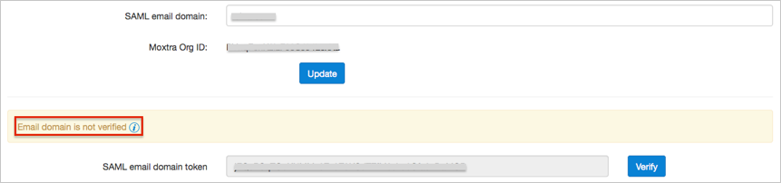
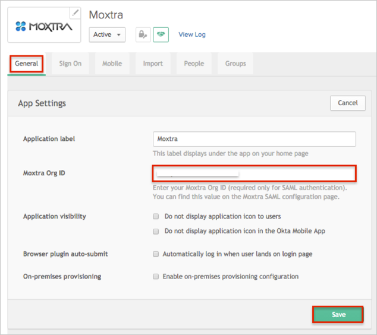
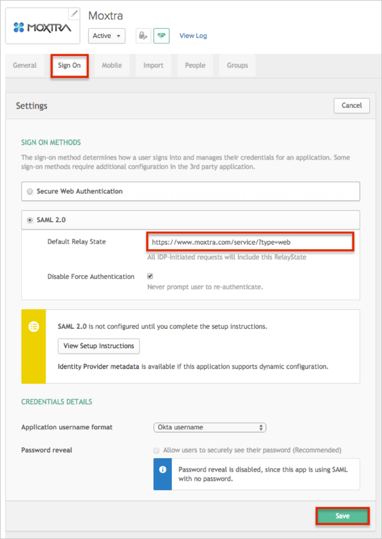
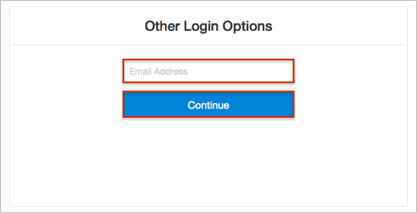

Login to your Moxtra account as an administrator.
Navigate to Admin Console > SAML Single Sign-on.
Choose to set up a new SAML integration.
Enter the following information (see screen shot at end of step for reference):
Name: Enter Okta
IdP Entity ID: Copy and paste the following:
Sign into the Okta Admin Dashboard to generate this variable.
SP Entity ID: Enter http://www.moxtra.com.
Login URL: Copy and paste the following:
Sign into the Okta Admin Dashboard to generate this variable.
AuthnContextClassRef: urn:oasis:names:tc:SAML:2.0:ac:classes:PasswordProtectedTransport (the default value).
NameID Format: Select urn:oasis:names:tc:SAML:1.1:nameid-format:emailAddress from the drop down menu.
SSO Flow: Select SP-Initiated.
Protocol Binding: Select Http Redirect.
AuthnRequest Signed: Uncheck this option.
Certificate: Copy and paste the following:
Sign into the Okta Admin Dashboard to generate this variable.
SAML email domain: Enter your email domain.
Note: You need to verify your email domain. Follow the Moxtra instructions (shown here) that will appear on the page once you click Update.

Moxtra Org ID: Make a copy of this value, you will need it later in Okta.
Click Update.

In Okta, select the General tab for the Moxtra app, then click Edit.
Enter the Moxtra Org ID you made a copy of earlier.
Click Save.

Select the Sign On tab, then click Edit.
For Default Relay State, enter https://www.moxtra.com/service/?type=web.
Click Save.

Done!
Notes:
IdP-initiated flows, SP-initiated flows, and Just In Time Provisioning (JIT) are all supported.
For SP-initiated flows:
Enter your Email Address.
Click Continue.
